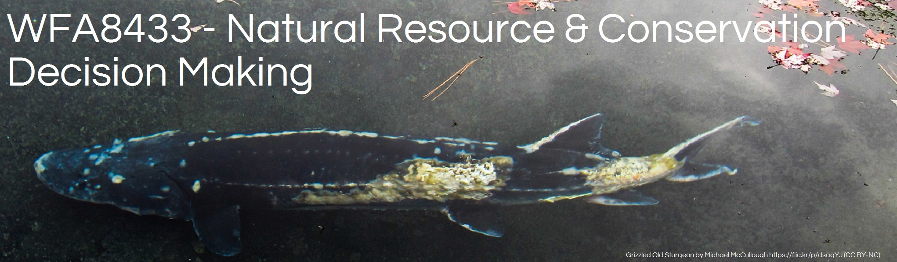

Instructor: Dr. Michael E. Colvin
Office: Thompson 215
Office phone: 662-325-3592
Email: michael.colvin@msstate.edu
Office hour(s): By appointment
Lecture: TBD
Location: TBD
Three hours lecture. Natural resource and conservation decision making including rapid prototyping of decision problems, structuring objectives, structured decision making, adaptive management, and relevant case studies of successful natural resource decision making.
Natural resource managers increasingly work with diverse stakeholder groups and incorporate their values and objectives when developing management and conservation plans. Such decisions are fraught with the complexity and uncertainty associated with ecological system dynamics and multiple and potentially conflicting objectives under consideration. Structured decision making (SDM) is an approach that can incorporate multiple competing objectives and ecological uncertainties in a framework that is transparent and adaptable. It also is an ideal framework for interdisciplinary management teams to cooperate and create the most effective management strategies. The Department of the Interior (DOI) has recognized the importance of SDM and has directed DOI bureaus and offices to incorporate SDM and adaptive management strategies into their land and resource management decision making. However, there are few courses on SDM and adaptive management available to students in natural resources and related fields. This course is intended to provide graduate students from diverse backgrounds (natural resources, ecological economics, civil engineering, political science, and others) with an understanding of the SDM process used for making natural resource management and conservation decisions regardless of the level of complexity or uncertainty. Primary focus is exposing students to the logic and conceptual basis of each step of the SDM process to understand when an SDM process is appropriate and how the process produces and optimal decision when properly implemented to a natural resource management or conservation problem.
The class materials are intended to develop the skills needed to create basic decision models for predicting the outcomes of management actions. The culmination of this course is the course project where students are required to integrate the skills. By the end of this course, all students should be able to:
Academic integrity is serious and all disciplinary action will be taken in the event of academic dishonesty. Mississippi State has an approved Honor Code that applies to all students. The code is as follows: “As a Mississippi State University student, I will conduct myself with honor and integrity at all times. I will not lie, cheat, or steal, nor will I accept the actions of those who do.” Upon accepting admission to Mississippi State University, a student immediately assumes a commitment to uphold the Honor Code, to accept responsibility for learning, and to follow the philosophy and rules of the Honor Code. Student will be required to state their commitment on examinations, research papers, and other academic work. Ignorance of the rules does not exclude any member of the MSU community from the requirements or the processes of the Honor Code. For additional information, please visit: http://honorcode.msstate.edu/policy.
In accordance with Academic Operating Policy 10.08 (approved July 12, 2005) and in order to limit classroom disruptions, as well as to protect against academic misconduct, the use by students of cell phones, messaging devices and other electronic devices is prohibited. In this class, students are required to put cell phone in the silent mode and stow in backpack while attending class and laboratory sessions.
http://www.cfr.msstate.edu/wildlife/documents/professional_expectations.pdf
Student performance will be based on weekly assignments (50%; 50 total points; 10 assignments each worth 5 points), a small group project that involves the development and evaluation of a model to inform a natural resource management or conservation decision (40%; 40 total points), and presentation of the small group project to the class (10%; 10 total points). Total assessment points equal 100.
Task (Points) Homework problem sets (50 Points (10 exercises x 5 points per exercise)) Project report (40 Points) Report presentation (10 Points) Total (100 Points)
A= 90 to 100 B = 80 to 89.9 C = 70 to 79.9 D = 69.9 to 69.9 F = 0 to 59.9
Late assignments and missed exams: All assignments must be turned in on time. Late assignments may be graded, but the maximum point value will be reduced by 10% for every day the assignment is late; however, assignments will not be graded if they are turned in after assignments grades are posted on blackboard. If for some reason there is a timing conflict associated with a course due date, discuss these conflicts with me at least two weeks prior to the scheduled date.
Important Dates
| Description | Date |
|---|---|
| Last day to drop a class without a grade | Friday, January 13, 2017 |
| Last day to add a class | Tuesday, January 17, 2017 |
| First progress reporting | Monday, February 20, 2017 |
| Last day to course with a “W” grade | Tuesday, February 28, 2017 |
| Second progress reporting | Friday, March 24, 2017 |
| Last day to withdraw from the university | Tuesday, April 11, 2017 |
| Classes end | Wednesday, April 26, 2017 |
| Reading day(s) | Thursday, April 27, 2017 |
| Final Exam | Thursday, May 04, 2017 8-11 am |
Accommodations are collaborative efforts between students, faculty and Disability Support Services (DSS). Students with accommodations approved through DSS are responsible for contacting the faculty member in charge of the course prior to or during the first week of the term to discuss accommodations. Students who believe they are eligible for accommodations but who have not yet obtained approval through DSS should contact DSS immediately at (662) 325-3335.
MSU is committed to complying with Title IX, a federal law that prohibits discrimination, including violence and harassment, based on sex. This means that MSU’ s educational programs and activities must be free from sex discrimination, sexual harassment, and other forms of sexual misconduct. If you or someone you know has experienced sex discrimination, sexual violence and/or harassment by any member of the University community, you are encouraged to report the conduct to MSU’s Director of Title IX/EEO Programs at 325-8124 or by e-mail to titleix@msstate.edu. Additional resources are available at:
Classes subject to change with instructor availability. Course is comprised of 45 contact hours, divided over the semester. All homework due 1 week from date assigned unless otherwise specified.
| Week | Wednesday Class | Friday Class |
|---|---|---|
| 1 | 1. Introduction to decision making | 2. PrOACT process; Making decisions: uncertainty, risk, and linked decisions |
| 2 | 3. Decision trees and decision making under uncertainty; Being a decision maker | 4. Decision trees and decision models |
| 3 | 5. Introduction to structured decision making in natural resources management; History, rational, and applications of decision making in natural resources and conservation | 6. Types of decision making philosophies in natural resources; Structuring and quantifying objectives |
| 4 | 7. Decision making and working with stakeholders | 8. No class SDAFS |
| 5 | 9. Statistics and decision making: Estimating current system states; Using data to estimate parameters and quantify uncertainty | 10. Predicting outcomes in a decision context: linear and generalized linear models |
| 6 | 11. Predicting outcomes in a decision context: hierarchical linear models | 12. Estimating current states (marked populations): abundance, survival, and both |
| 7 | 13. No class-instructor out of town | 14. No class-instructor out of town |
| 8 | 15. Estimating current states (unmarked populations): Occupancy | 16. Estimating current states (unmarked populations): multi season and state occupancy models |
| 9 | 17. Estimating current states (unmarked populations): Closed and open N-mixture models | 18. Introduction to influence diagrams, Using graphical models to predict outcomes |
| 10 | 19. No class spring break | 20. No class spring break |
| 11 | 21. Eliciting and quantifying expert judgment | 22. Influence diagrams and decision alternatives |
| 12 | 23. Choosing the best decision alternative and evaluating the effect of uncertainty-I & II | 24. Sensitivity analysis and estimating the value of information |
| 13 | 25. Introduction to optimization | 26. Case study I-Setting harvest regulations & Case study II-Invasive species control |
| 14 | 27. Conflict resolution and knowledge acquisition through adaptive management; AM: More than just trial and error | 28. No class university holiday |
| 15 | 29. Learning from monitoring in AM; Prioritizing learning: Passive versus active AM | 30. Case study-black duck management; Case study-Golden Eagles and trail closures in Denali National Park |
| 16 | 31. Case study-reconnection of fragmented habitats; Case study-Adaptive management of horseshoe crabs and red knots | 32. Advanced topics in SDM and AM: Risk and extreme uncertainty |